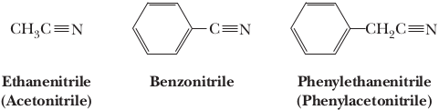
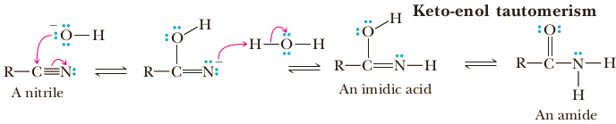
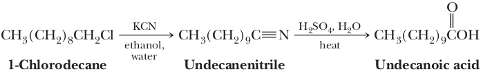

Nitriles
Nitriles contain the cyano group, −C≡N, and although they lack the carbonyl group that the othercarboxylic acid derivatives have, they are still classified as carboxylic acid derivatives since they are hydrolyzed to carboxylic acids, and also can be produced by dehydration of primary amides.
Inorganic compounds containing the −C≡N group are not called nitriles, but cyanides (it. isocianuri) instead. An isocyanide instead (also called isonitrile or carbylamine) is an organic compound with the functional group -N≡C. It is the isomer of the related nitrile (-C≡N), hence the prefix is isocyano. The organic fragment is connected to the isocyanide group through the nitrogen atom, not via the carbon.
Both the carbon and nitrogen atoms of a nitrile are sp hybridized, and the bond angle is 180°.
IUPAC names follow the pattern alkanenitrile: for example, ethanenitrile. Common names are derived by dropping the suffix -ic or -oic acid from the name of the parent carboxylic acid and adding the suffix -onitrile.
Hydrolysis of a Cyano Group to an Amide in Aqueous Base
Hydrolysis of a cyano group in aqueous base involves initial formation of the anion of an imidic acid, which, after proton transfer from water, undergoes keto-enol tautomerism to give an amide. The amide is then hydrolyzed by aqueous base, as we have seen earlier, to the carboxylate anion and ammonia.
The acid-catalyzed reaction proceeds similarly; the only difference is in the order of proton transfers.
Hydrolysis of nitriles is a valuable route to the synthesis of carboxylic acids from primary or secondary haloalkanes. In this route, one carbon in the form of a cyano group is added to a carbon chain and then converted to a carboxyl group.
Reduction
Lithium aluminum hydride reduces the cyano group of a nitrile to a primary amino group.
Reduction of cyano groups is useful for the preparation of primary amines only.